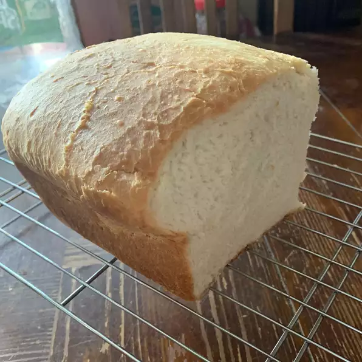

Bread

Description
White Bread for the bread machine. Plain, simple, gets the job done, and is good.
Ingredients
- 1 cup warm water (110 degrees F/45 degrees C)
- 3 tablespoons white sugar
- 1 ½ teaspoons salt
- 3 tablespoons vegetable oil
- 3 cups bread flour
- 2 ¼ teaspoons active dry yeast
Directions
- Place water, sugar, salt, oil, bread flour and yeast into pan of bread machine.
- Bake on White Bread setting. Cool on wire racks before slicing.
Return to Homepage